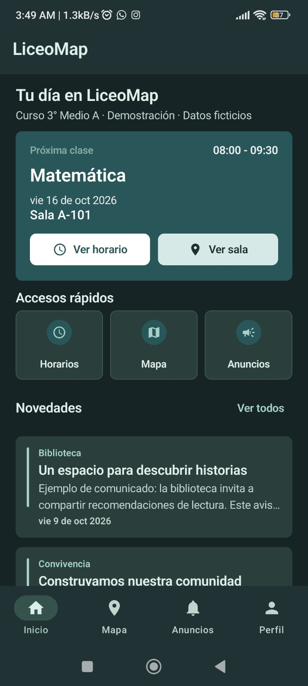
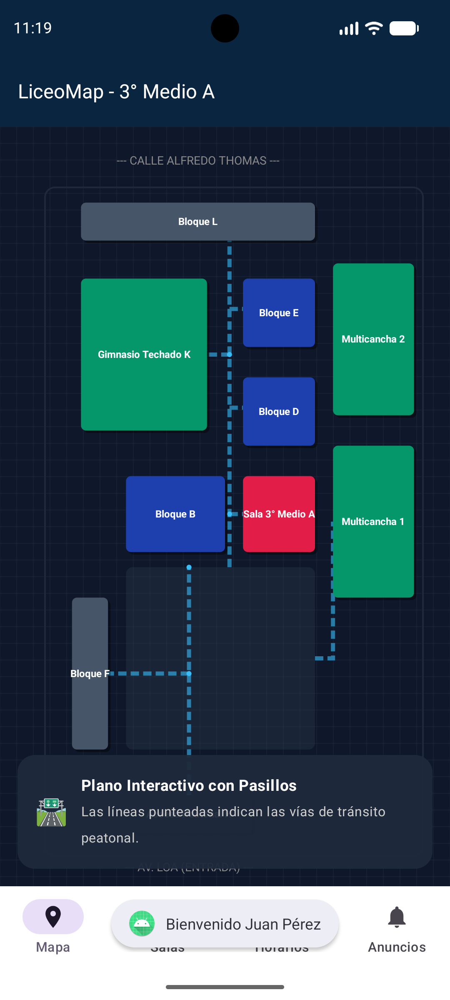
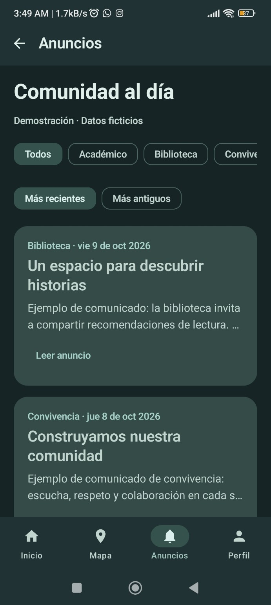

LiceoMap / Una mirada a tu día
Tu colegio. Más cerca.
Tus espacios, tus clases, tu comunidad. Descubre lo que busca acercar LiceoMap.
Interfaces reales. Datos de demostración.
01 / Orientación
¿Te pierdes buscando tu sala?
LiceoMap busca ayudarte a ubicar los espacios del liceo con un plano visual.
Encuentra tu camino.
Ubica bloques y pasillos. Plano de referencia, sin búsqueda activa de salas.
Ampliar plano ↗
02 / Tu jornada
¿No recuerdas qué clase te toca?
Una vista de tu próxima clase para organizar mejor la jornada escolar.
Anticípate a lo que viene.
Inicio muestra datos ficticios. La consulta web también es demostrativa.
Probar la consulta demo ↗Ampliar Inicio
03 / Comunidad
¿Te enteras tarde de los avisos?
Noticias y comunicados en un mismo lugar para seguir la vida del liceo.
Lo importante, más cerca.
Ejemplos de biblioteca y convivencia. Esta web no recibe avisos en tiempo real.

04 / El próximo paso es tuyo
Un proyecto. Tu comunidad.
Del primer bloque del día al próximo lugar al que quieres llegar. Conoce el proyecto y explora sus herramientas de demostración.
Tu punto de partida.
Plano, consultas y panel de demostración. Explora el proyecto.